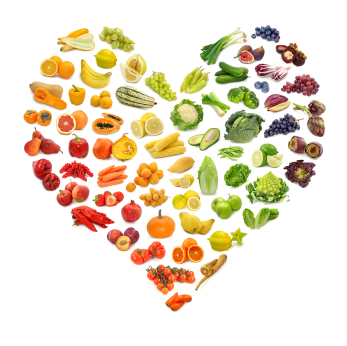

My Approach
I practice a holistic approach to health and wellness, which means that I look at how all areas of your life are connected. Does stress at your job or in your relationship cause you to overeat? Does lack of sleep or low energy prevent you from exercising? As we work together, we will look at how ALL parts of your life affect your health as a whole.
My approach is not to dwell on calories, carbs, fats, and proteins. It is not to create lists of restrictions or good and bad foods. Instead, I work with my clients to create a happy, healthy life in a way that is flexible, FUN and rewarding. Personally, I can only make changes when I feel inspired so I cannot impose any treacherous diets on you! No feelings of deprivation in my program. It’s not about taking things out of your life, but rather “crowding out” the bad with the good. I don’t know about you, but I find it hard to kick bad habits. I find it much easier when the bad habits get kicked out by the good ones, without me having to do anything or TRY (ooh…that word). The more you resist something, the more it persists. I don’t believe in the motto “no pain no gain”. For me, what rings true is “no fun, no (lasting) gain”.
Some concepts I use in my approach are the following:
Bio-individuality™: The concept of bio-individuality is that each person has unique food and lifestyle needs. One person’s food is another person’s poison, and that’s why fad diets tend to fail in the long run. Working on the principle of bio-individuality, I’ll support you to make positive changes that are based on your unique needs, lifestyle, preferences, and ancestral background. I use a personalized, holistic approach to ensure that you will have great success!
Primary Food™: It’s easy to overlook all of the things that contribute to our sense of nourishment and fulfillment. It’s not just the food we eat, but all of the other factors present in our daily lives. Healthy relationships, a fulfilling career, regular physical activity and a spiritual awareness are essential forms of nourishment. When these “primary foods” are balanced, what you eat becomes secondary. I will support you in achieving all of your goals, from eating the right foods for your body to living an inspired, fulfilling life.